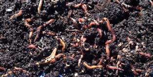

La lobricultura es otra de las formas de producir abono. La lombriz productiva es la roja californiana (Laesceniaphetida).
El humus de lombriz lobricompuesto se obtiene utilizando lombrices para digerir la materia orgánica. Existen algunas diferencias con respecto a la forma de hacer compost mencionada anteriormente:

Para retirar el humus se deben separar las lombrices del abono, utilizando trampas. Se ponen restos frescos y húmedos (estiércol, restos de cocina, etc.) en bolsas agujereadas que se colocan sobre el lumbricario y se retiran a los 7 días. Se recomienda no regar el cantero tres o cuatro días antes de la colocación de las trampas. Para complementar este proceso se puede tamizar el humus con una malla, de modo de atrapar a las lombrices que quedaron.
Manejo en el lumbricario
Es importante el control de la temperatura, que no debe subir tanto como en la compostera. Además, se debe seguir agregando material fresco hasta 15 días antes de terminar el proceso y remover mensualmente. Se debe controlar la humedad: al presionar un puñado de humus, no debe gotear.
Tiempo de ambos procesos
El compost o el humus están listos cuando tienen un olor agradable, presentan un color oscuro similar a la tierra y no se pueden reconocer los materiales iniciales. Se estima que el proceso lleva alrededor de tres meses. En verano, sin que le falte humedad, el humus queda pronto en un mes y medio.